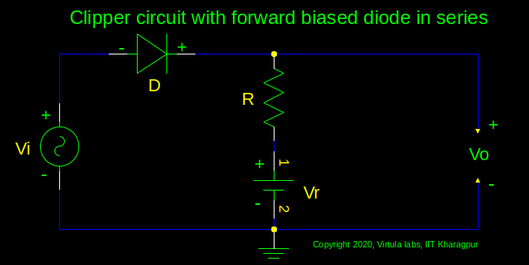
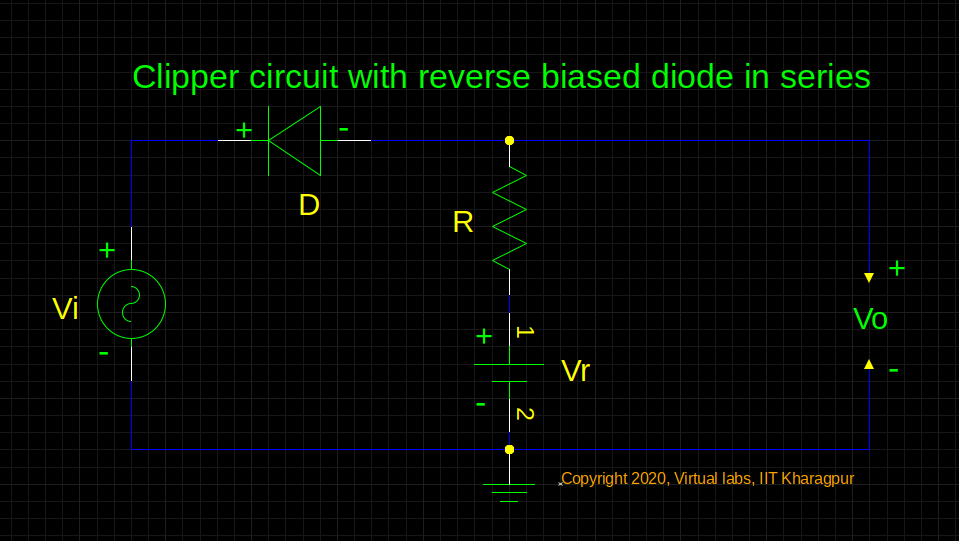
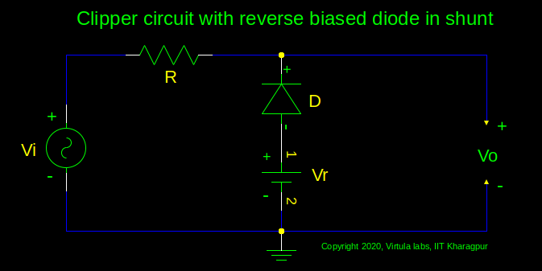
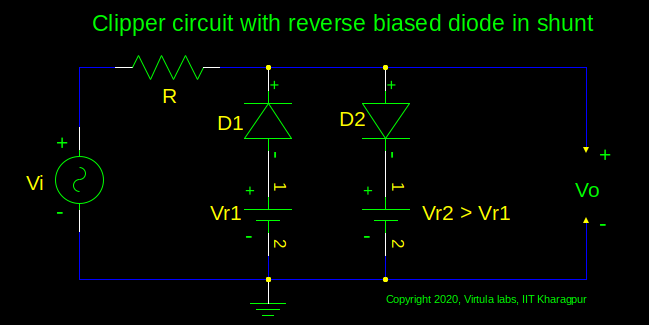

|
Clipper circuit with Forward biased diode in series Clipper circuit with Reverse biased diode in series Clipper circuit with Forward biased diode in shunt Clipper circuit with Reverse biased diode in shunt Clipper Circuit with Limiting at two different levels |
 |  |  |
 |  |
Instructions1:
|
Instructions:
|
| Aditya1 | Aditya11 | ||||||
| Aditya2 | Aditya21 | ||||||
| Aditya3 | Aditya31 | ||||||
| Aditya4 | Aditya41 | ||||||
| Aditya5 | Aditya51 | ||||||
| Parameters | Graph | ||||||
|---|---|---|---|---|---|---|---|
|
A:Volts T: secs Vr: Volts |
|||||||
|
A:Volts T: secs Vr1: Volts Vr2: Volts |
|||||||